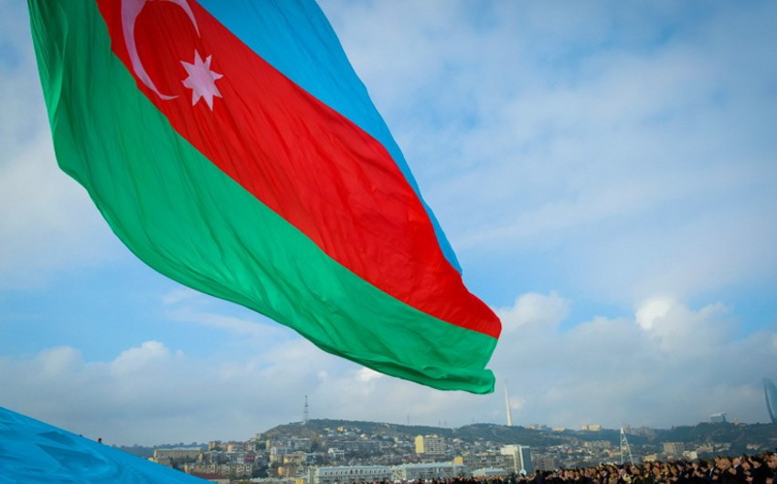
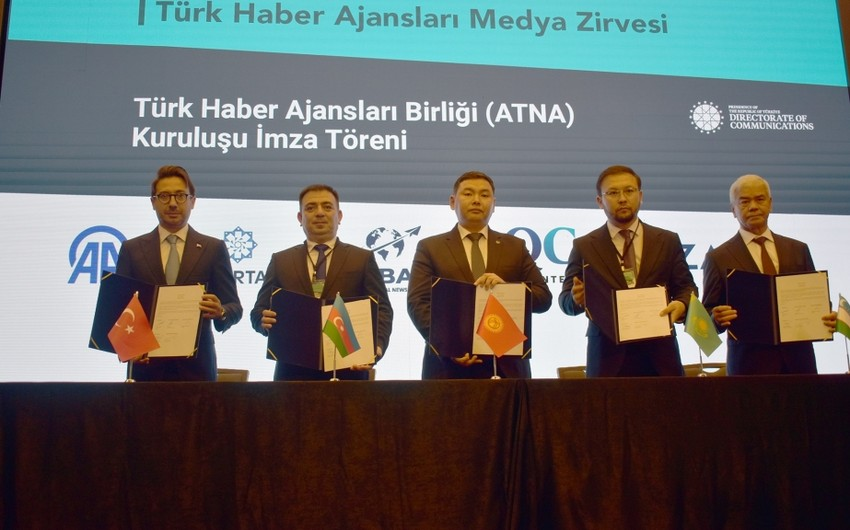
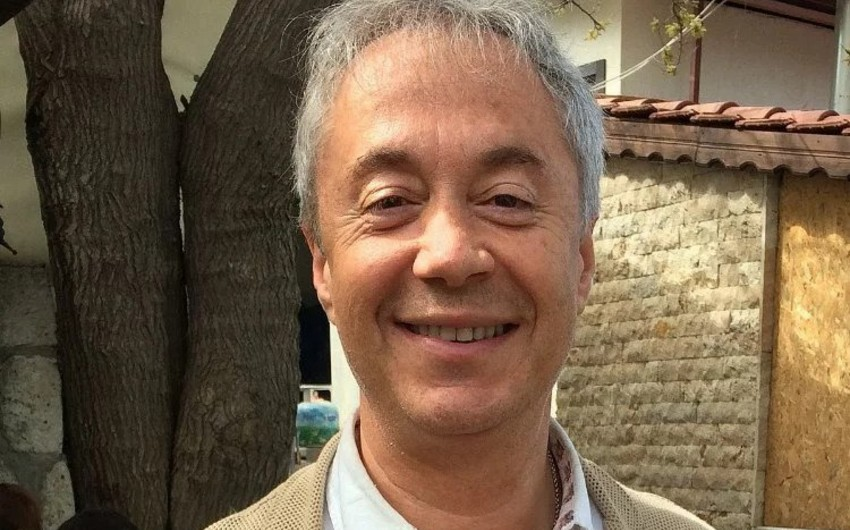

Azərbaycanda "Qızıl qələm" mükafatının verilməsi dayandırılıb.
"Report" xəbər verir ki, bu barədə Mətbuat Şurası məlumat yayıb.
Bildirilib ki, vaxtilə cəmiyyətdə müəyyən nüfuz qazanmış, dəyərli qələm adamlarına verilmiş, Kütləvi İnformasiya Vasitələri İşçiləri Həmkarlar İttifaqı adlanan qurumun təsis etdiyi "Qızıl qələm" mükafatı son illər jurnalistikadan uzaq insanlara təqdim olunmaqla öz etibarını itirib, cəmiyyətdə haqlı narazılığa səbəb olub. Mətbuat Şurası jurnalistikamızın və peşəkar media işçilərinin nüfuzuna xələl gətirən bu məsələyə biganə qala bilməzdi. Buna görə də MŞ-nin tapşırığı ilə quruma faktiki rəhbərlik edən Çingiz Qurbanoğlu Şuraya dəvət olunub, icraçı katibin müavini İlqar Tağıyev Mətbuat Şurasının mövqeyini, irad və tövsiyələrini onun diqqətinə çatdırıb. Nəticədə Ç.Qurbanoğlu Azərbaycan Mətbuat Şurasına müraciət ünvanlayıb. O, məktubunda son zamanlar mətbuatda və sosial şəbəkələrdə sədri olduğu Kütləvi İnformasiya Vasitələri İşçiləri Həmkarlar İttifaqının müxtəlif insanlara təqdim etdiyi "Qızıl qələm" və digər media mükafatları ilə bağlı narazılıqlar, həmçinin MŞ-nin tövsiyələrini nəzərə alaraq KİVİHİ Rəyasət Heyətinin qərarı ilə bu mükafatların təqdimatının dayandırıldığını yazıb. Mətbuat Şurası da müraciəti anlayışla qarşılayaraq problemin həllini tapdığını bildirir.
Sonda MŞ digər ictimai qurumlara da müraciət edərək media adı ilə mükafatlar verilməsində ehtiyatlı davranmağa, Azərbaycan jurnalistikasının nüfuzuna xələl gətirən addımlardan çəkinməyə çağırır.
ƏN VACİB XƏBƏRLƏR
17 Noyabr , 2023 19:39
 Rəsmi Bakı regionda yeni əməkdaşlıq formatı elan edib16 Noyabr , 2023 15:11
17 Noyabr , 2023 10:40
 İstanbulda Türk Xəbər Agentlikləri Alyansı yaradılıb6 Noyabr , 2023 13:27
Bu gün teleradio işçilərinin peşə bayramı günüdür6 Noyabr , 2023 09:57
 Türkiyəli məşhur aparıcı vəfat edib17 Noyabr , 2023 03:54